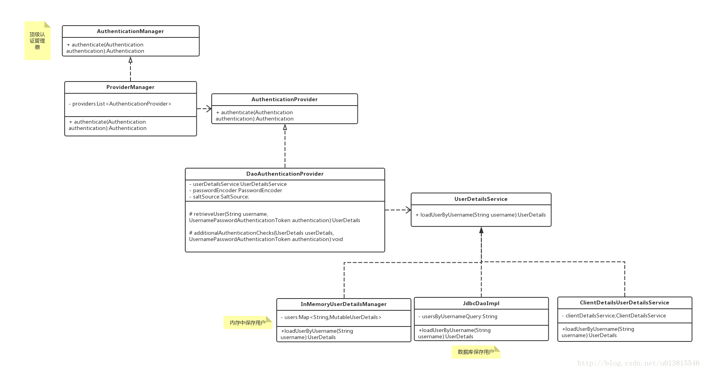
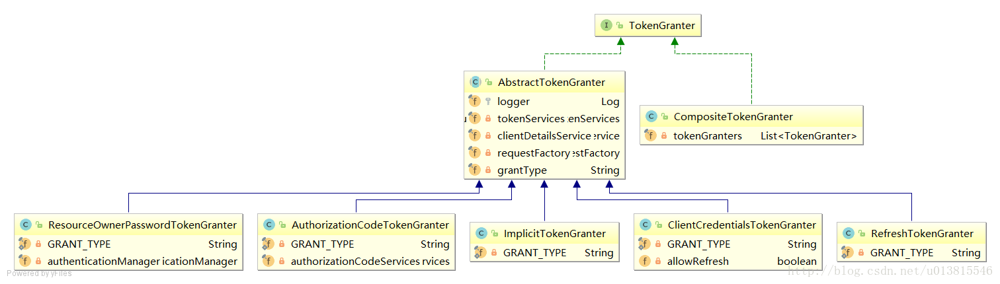

Spring Security Oauth2（二）
原文出处：https://blog.csdn.net/u013815546/article/details/76977239
作者：下一秒升华
本文开始从源码的层面，讲解一些Spring Security Oauth2的认证流程。本文较长，适合在空余时间段观看。且涉及了较多的源码，非关键性代码以…代替。
准备工作
首先开启debug信息：
logging:
level:
org.springframework: DEBUG
可以完整的看到内部的运转流程。
client模式稍微简单一些，使用client模式获取token http://localhost:8080/oauth/token?client_id=client_1&client_secret=123456&scope=select&grant_type=client_credentials
由于debug信息太多了，我简单按照顺序列了一下关键的几个类：
ClientCredentialsTokenEndpointFilter
DaoAuthenticationProvider
TokenEndpoint
TokenGranter
@EnableAuthorizationServer
上一篇博客中我们尝试使用了password模式和client模式，有一个比较关键的endpoint：/oauth/token。从这个入口开始分析，spring security oauth2内部是如何生成token的。获取token，与第一篇文章中的两个重要概念之一有关，也就是AuthorizationServer与ResourceServer中的AuthorizationServer。
在之前的配置中
@Configuration
@EnableAuthorizationServer
protected static class AuthorizationServerConfiguration extends AuthorizationServerConfigurerAdapter {}
出现了AuthorizationServerConfigurerAdapter 关键类，他关联了三个重要的配置类，分别是
public class AuthorizationServerConfigurerAdapter implements AuthorizationServerConfigurer {
@Override
public void configure(AuthorizationServerSecurityConfigurer security <1>) throws Exception {
}
@Override
public void configure(ClientDetailsServiceConfigurer clients <2>) throws Exception {
}
@Override
public void configure(AuthorizationServerEndpointsConfigurer endpoints <3>) throws Exception {
}
}
<1> 配置AuthorizationServer安全认证的相关信息，创建ClientCredentialsTokenEndpointFilter核心过滤器
<2> 配置OAuth2的客户端相关信息
<3> 配置AuthorizationServerEndpointsConfigurer众多相关类，包括配置身份认证器，配置认证方式，TokenStore，TokenGranter，OAuth2RequestFactory
我们逐步分析其中关键的类
客户端身份认证核心过滤器ClientCredentialsTokenEndpointFilter（掌握）
截取关键的代码，可以分析出大概的流程 在请求到达/oauth/token之前经过了ClientCredentialsTokenEndpointFilter这个过滤器，关键方法如下
public Authentication attemptAuthentication(HttpServletRequest request, HttpServletResponse response)
throws AuthenticationException, IOException, ServletException {
...
String clientId = request.getParameter("client_id");
String clientSecret = request.getParameter("client_secret");
...
clientId = clientId.trim();
UsernamePasswordAuthenticationToken authRequest = new UsernamePasswordAuthenticationToken(clientId,
clientSecret);
return this.getAuthenticationManager().authenticate(authRequest);
}
顶级身份管理者AuthenticationManager（掌握）
用来从请求中获取client_id,client_secret，组装成一个UsernamePasswordAuthenticationToken作为身份标识，使用容器中的顶级身份管理器AuthenticationManager去进行身份认证（AuthenticationManager的实现类一般是ProviderManager。而ProviderManager内部维护了一个List,真正的身份认证是由一系列AuthenticationProvider去完成。而AuthenticationProvider的常用实现类则是DaoAuthenticationProvider，DaoAuthenticationProvider内部又聚合了一个UserDetailsService接口，UserDetailsService才是获取用户详细信息的最终接口，而我们上一篇文章中在内存中配置用户，就是使用了UserDetailsService的一个实现类InMemoryUserDetailsManager）。UML类图可以大概理解下这些类的关系，省略了授权部分。  图1 认证相关UML类图
可能机智的读者会发现一个问题，我前面一篇文章已经提到了client模式是不存在“用户”的概念的，那么这里的身份认证是在认证什么呢？debug可以发现UserDetailsService的实现被适配成了ClientDetailsUserDetailsService，这个设计是将client客户端的信息（client_id,client_secret）适配成用户的信息(username,password)，这样我们的认证流程就不需要修改了。 经过ClientCredentialsTokenEndpointFilter之后，身份信息已经得到了AuthenticationManager的验证。接着便到达了 TokenEndpoint。
Token处理端点TokenEndpoint（掌握）
前面的两个ClientCredentialsTokenEndpointFilter和AuthenticationManager可以理解为一些前置校验，和身份封装，而这个类一看名字就知道和我们的token是密切相关的。
@FrameworkEndpoint
public class TokenEndpoint extends AbstractEndpoint {
@RequestMapping(value = "/oauth/token", method=RequestMethod.POST)
public ResponseEntity<OAuth2AccessToken> postAccessToken(Principal principal, @RequestParam
Map<String, String> parameters) throws HttpRequestMethodNotSupportedException {
...
String clientId = getClientId(principal);
ClientDetails authenticatedClient = getClientDetailsService().loadClientByClientId(clientId);//<1>
...
TokenRequest tokenRequest = getOAuth2RequestFactory().createTokenRequest(parameters, authenticatedClient);//<2>
...
OAuth2AccessToken token = getTokenGranter().grant(tokenRequest.getGrantType(), tokenRequest);//<3>
...
return getResponse(token);
}
private TokenGranter tokenGranter;
}
<1> 加载客户端信息
<2> 结合请求信息，创建TokenRequest
<3> 将TokenRequest传递给TokenGranter颁发token
省略了一些校验代码之后，真正的/oauth/token端点暴露在了我们眼前，其中方法参数中的Principal经过之前的过滤器，已经被填充了相关的信息，而方法的内部则是依赖了一个TokenGranter 来颁发token。其中OAuth2AccessToken的实现类DefaultOAuth2AccessToken就是最终在控制台得到的token序列化之前的原始类:
public class DefaultOAuth2AccessToken implements Serializable, OAuth2AccessToken {
private static final long serialVersionUID = 914967629530462926L;
private String value;
private Date expiration;
private String tokenType = BEARER_TYPE.toLowerCase();
private OAuth2RefreshToken refreshToken;
private Set<String> scope;
private Map<String, Object> additionalInformation = Collections.emptyMap();
//getter,setter
}
@org.codehaus.jackson.map.annotate.JsonSerialize(using = OAuth2AccessTokenJackson1Serializer.class)
@org.codehaus.jackson.map.annotate.JsonDeserialize(using = OAuth2AccessTokenJackson1Deserializer.class)
@com.fasterxml.jackson.databind.annotation.JsonSerialize(using = OAuth2AccessTokenJackson2Serializer.class)
@com.fasterxml.jackson.databind.annotation.JsonDeserialize(using = OAuth2AccessTokenJackson2Deserializer.class)
public interface OAuth2AccessToken {
public static String BEARER_TYPE = "Bearer";
public static String OAUTH2_TYPE = "OAuth2";
/**
* The access token issued by the authorization server. This value is REQUIRED.
*/
public static String ACCESS_TOKEN = "access_token";
/**
* The type of the token issued as described in <a
* href="http://tools.ietf.org/html/draft-ietf-oauth-v2-22#section-7.1">Section 7.1</a>. Value is case insensitive.
* This value is REQUIRED.
*/
public static String TOKEN_TYPE = "token_type";
/**
* The lifetime in seconds of the access token. For example, the value "3600" denotes that the access token will
* expire in one hour from the time the response was generated. This value is OPTIONAL.
*/
public static String EXPIRES_IN = "expires_in";
/**
* The refresh token which can be used to obtain new access tokens using the same authorization grant as described
* in <a href="http://tools.ietf.org/html/draft-ietf-oauth-v2-22#section-6">Section 6</a>. This value is OPTIONAL.
*/
public static String REFRESH_TOKEN = "refresh_token";
/**
* The scope of the access token as described by <a
* href="http://tools.ietf.org/html/draft-ietf-oauth-v2-22#section-3.3">Section 3.3</a>
*/
public static String SCOPE = "scope";
...
}
一个典型的样例token响应,如下所示，就是上述类序列化后的结果：
{
"access_token":"950a7cc9-5a8a-42c9-a693-40e817b1a4b0",
"token_type":"bearer",
"refresh_token":"773a0fcd-6023-45f8-8848-e141296cb3cb",
"expires_in":27036,
"scope":"select"
}
TokenGranter（掌握）
先从UML类图对TokenGranter接口的设计有一个宏观的认识
 图2 TokenGranter相关UML类图
TokenGranter的设计思路是使用CompositeTokenGranter管理一个List列表，每一种grantType对应一个具体的真正授权者，在debug过程中可以发现CompositeTokenGranter 内部就是在循环调用五种TokenGranter实现类的grant方法，而granter内部则是通过grantType来区分是否是各自的授权类型。
public class CompositeTokenGranter implements TokenGranter {
private final List<TokenGranter> tokenGranters;
public CompositeTokenGranter(List<TokenGranter> tokenGranters) {
this.tokenGranters = new ArrayList<TokenGranter>(tokenGranters);
}
public OAuth2AccessToken grant(String grantType, TokenRequest tokenRequest) {
for (TokenGranter granter : tokenGranters) {
OAuth2AccessToken grant = granter.grant(grantType, tokenRequest);
if (grant!=null) {
return grant;
}
}
return null;
}
}
五种类型分别是：
- ResourceOwnerPasswordTokenGranter ==> password密码模式
- AuthorizationCodeTokenGranter ==> authorization_code授权码模式
- ClientCredentialsTokenGranter ==> client_credentials客户端模式
- ImplicitTokenGranter ==> implicit简化模式
RefreshTokenGranter ==>refresh_token 刷新token专用 以客户端模式为例，思考如何产生token的，则需要继续研究5种授权者的抽象类： AbstractTokenGranter
public abstract class AbstractTokenGranter implements TokenGranter { protected final Log logger = LogFactory.getLog(getClass()); //与token相关的service，重点 private final AuthorizationServerTokenServices tokenServices; //与clientDetails相关的service，重点 private final ClientDetailsService clientDetailsService; //创建oauth2Request的工厂，重点 private final OAuth2RequestFactory requestFactory; private final String grantType; ... public OAuth2AccessToken grant(String grantType, TokenRequest tokenRequest) { ... String clientId = tokenRequest.getClientId(); ClientDetails client = clientDetailsService.loadClientByClientId(clientId); validateGrantType(grantType, client); logger.debug("Getting access token for: " + clientId); return getAccessToken(client, tokenRequest); } protected OAuth2AccessToken getAccessToken(ClientDetails client, TokenRequest tokenRequest) { return tokenServices.createAccessToken(getOAuth2Authentication(client, tokenRequest)); } protected OAuth2Authentication getOAuth2Authentication(ClientDetails client, TokenRequest tokenRequest) { OAuth2Request storedOAuth2Request = requestFactory.createOAuth2Request(client, tokenRequest); return new OAuth2Authentication(storedOAuth2Request, null); } ... }
回过头去看TokenEndpoint中，正是调用了这里的三个重要的类变量的相关方法。由于篇幅限制，不能延展太多，不然没完没了，所以重点分析下AuthorizationServerTokenServices是何方神圣。
AuthorizationServerTokenServices（了解）
AuthorizationServer端的token操作service，接口设计如下：
public interface AuthorizationServerTokenServices {
//创建token
OAuth2AccessToken createAccessToken(OAuth2Authentication authentication) throws AuthenticationException;
//刷新token
OAuth2AccessToken refreshAccessToken(String refreshToken, TokenRequest tokenRequest)
throws AuthenticationException;
//获取token
OAuth2AccessToken getAccessToken(OAuth2Authentication authentication);
}
在默认的实现类DefaultTokenServices中，可以看到token是如何产生的，并且了解了框架对token进行哪些信息的关联。
@Transactional
public OAuth2AccessToken createAccessToken(OAuth2Authentication authentication) throws AuthenticationException {
OAuth2AccessToken existingAccessToken = tokenStore.getAccessToken(authentication);
OAuth2RefreshToken refreshToken = null;
if (existingAccessToken != null) {
if (existingAccessToken.isExpired()) {
if (existingAccessToken.getRefreshToken() != null) {
refreshToken = existingAccessToken.getRefreshToken();
// The token store could remove the refresh token when the
// access token is removed, but we want to
// be sure...
tokenStore.removeRefreshToken(refreshToken);
}
tokenStore.removeAccessToken(existingAccessToken);
}
else {
// Re-store the access token in case the authentication has changed
tokenStore.storeAccessToken(existingAccessToken, authentication);
return existingAccessToken;
}
}
// Only create a new refresh token if there wasn't an existing one
// associated with an expired access token.
// Clients might be holding existing refresh tokens, so we re-use it in
// the case that the old access token
// expired.
if (refreshToken == null) {
refreshToken = createRefreshToken(authentication);
}
// But the refresh token itself might need to be re-issued if it has
// expired.
else if (refreshToken instanceof ExpiringOAuth2RefreshToken) {
ExpiringOAuth2RefreshToken expiring = (ExpiringOAuth2RefreshToken) refreshToken;
if (System.currentTimeMillis() > expiring.getExpiration().getTime()) {
refreshToken = createRefreshToken(authentication);
}
}
OAuth2AccessToken accessToken = createAccessToken(authentication, refreshToken);
tokenStore.storeAccessToken(accessToken, authentication);
// In case it was modified
refreshToken = accessToken.getRefreshToken();
if (refreshToken != null) {
tokenStore.storeRefreshToken(refreshToken, authentication);
}
return accessToken;
}
简单总结一下AuthorizationServerTokenServices的作用，他提供了创建token，刷新token，获取token的实现。在创建token时，他会调用tokenStore对产生的token和相关信息存储到对应的实现类中，可以是redis，数据库，内存，jwt。
总结
本篇总结了使用客户端模式获取Token时，spring security oauth2内部的运作流程，重点是在分析AuthenticationServer相关的类。其他模式有一定的不同，但抽象功能是固定的，只是具体的实现类会被相应地替换。阅读spring的源码，会发现它的设计中出现了非常多的抽象接口，这对我们理清楚内部工作流程产生了不小的困扰，我的方式是可以借助UML类图，先从宏观理清楚作者的设计思路，这会让我们的分析事半功倍。
下一篇文章重点分析用户携带token访问受限资源时，spring security oauth2内部的工作流程。即ResourceServer相关的类。